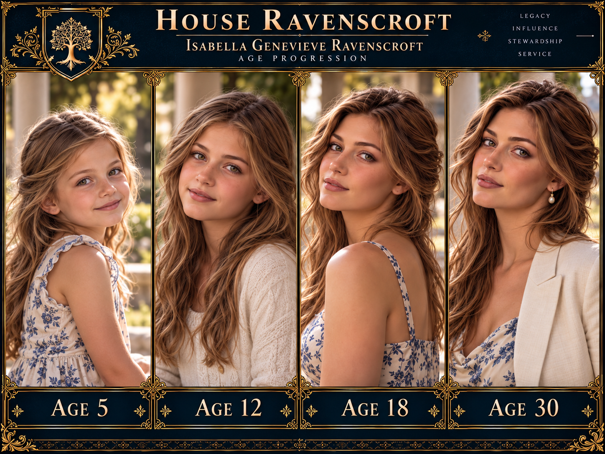
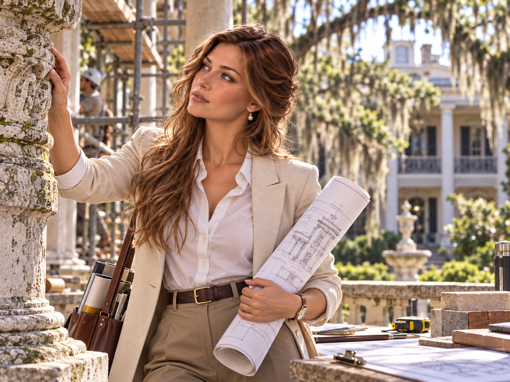
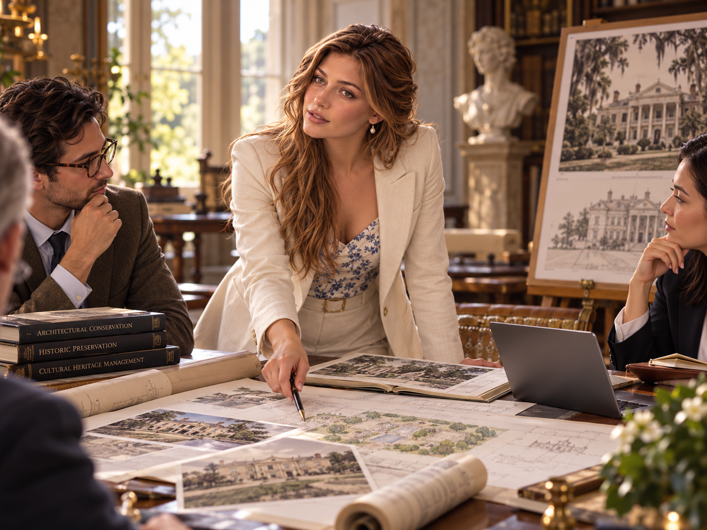

Parents
Father: Thomas Julian Ravenscroft
Mother: Dr. Emilia Sofia de Aranda Ravenscroft
House Ravenscroft • Family Intelligence Archive • Master A
Locked Canon • Senior/Main Line • Blood Family • Age 30 • 2026

Architectural conservationist, historic preservation specialist, patron, and fully inducted Ravenscroft whose professional network gives her legitimate reach across preservation, museums, universities, archives, philanthropy, and cultural institutions.

Father: Thomas Julian Ravenscroft
Mother: Dr. Emilia Sofia de Aranda Ravenscroft
Alexandra Emilia Ravenscroft
Julian Thomas Ravenscroft II
Cecilia Rose Ravenscroft
None as of 2026.
Children block retained by Master A standard even when empty.
Spouse
Born April 22, 1992. Raised in rural Kentucky in a non-dynastic family. Equine veterinarian and surgeon specializing in orthopedics, performance-horse medicine, and advanced surgical care.
Married: August 17, 2024
Order exposure: Limited/basic through marriage; not fully inducted.
Household finances: Daniel's independent professional income is substantial, while the majority of household capital and property remains tied to Isabella's Ravenscroft trusts and inherited interests.

University of Virginia — Bachelor of Arts (B.A.) in Architectural History, August 2014–May 2018.
Columbia University — M.S. in Historic Preservation, September 2018–May 2020.
Advanced work in conservation techniques, historic materials, building diagnostics, restoration planning, museum studies, archival research, and cultural-heritage policy.
Extensive field study in the United States and Europe.
Standard elite Ravenscroft education in dynastic history, Order history and protocol, rhetoric, negotiation, strategic thinking, institutional behavior, power dynamics, motive-reading, discretion, counter-manipulation, information security, and social influence.
Her training emphasizes controlled social fluency and institutional access rather than frontline covert operations.
Dynastic history; Order history and protocol; negotiation; rhetoric; strategic thinking; power dynamics; institutional behavior; social influence; motive-reading; counter-manipulation; discretion; compartmentalization; information security; and elite-network navigation.
Training emphasizes controlled social fluency, institutional access, judgment, and counter-manipulation rather than frontline covert or paramilitary work.
Architectural conservation methods; historic materials; building diagnostics; restoration planning; archival research; museum and collections context; preservation policy; cultural-heritage stewardship; project management; and donor-facing cultural diplomacy.
Birth. Born in Geneva, Switzerland.
Enters the University of Virginia for undergraduate study in Architectural History.
Initial Order induction, six days after her eighteenth birthday, beginning formal adult-stage access to House and Order structures.
Deeper Order induction shortly after turning twenty-one, expanding knowledge, protocol access, and specialist formation.
Completes the B.A. in Architectural History at the University of Virginia.
Begins the M.S. in Historic Preservation at Columbia University.
Full Order induction, completing the principal adult induction sequence and establishing her as a fully inducted Ravenscroft member.
Completes the M.S. in Historic Preservation at Columbia University.
Builds early professional experience through preservation, conservation-planning, archival, and restoration work in the Northeast and Mid-Atlantic, including field assignments in the United States and Europe.
Establishes Savannah, Georgia, as her primary professional and residential base.
Establishes Ravenscroft Heritage Conservation in Savannah and assumes the role of Principal.
Marries Daniel James Parker.
Principal, Ravenscroft Heritage Conservation; active patron; fully inducted Order member with Tier III specialist clearance and limited specialist authority.
Leads preservation, restoration, adaptive-reuse, and conservation-planning work involving historic residences, estates, museums, public buildings, universities, cultural sites, and institutional properties.
Her work combines technical conservation practice, archival research, stakeholder negotiation, project management, donor relations, and long-range stewardship. She regularly works with historical societies, municipalities, museums, universities, philanthropies, private owners, and preservation organizations.
Within the House, her professional network is valuable because it provides legitimate and durable access to archives, historical properties, boards, cultural institutions, donor circles, and heritage organizations without reducing her career to a covert assignment.


Early post-graduate assignment involving a late-19th-century commercial block suffering from water infiltration, deferred maintenance, inappropriate alterations, and partial vacancy. Isabella worked under senior conservation professionals on archival research, materials documentation, façade and window conservation, and adaptive-reuse planning.
Career significance: established practical experience under other professionals and reinforced her belief that preservation must remain economically viable.
Long-range conservation and adaptive-use plan for a historic working equestrian estate. The project required balancing historic stable fabric with modern equine-health and safety standards.
Career significance: strengthened her reputation for practical preservation and introduced her to Daniel James Parker on October 9, 2021.
Preservation and adaptive-reuse planning for a mid-19th-century institutional building facing competing restoration, redevelopment, accessibility, and modernization demands.
Career significance: expanded Isabella's relationships with regional preservation circles, municipal officials, museum professionals, and donors and contributed to her decision to establish her base in Savannah.
Major layered conservation project involving an 1830s–1840s residence, later additions, gardens, service structures, landscape archaeology, archival research, environmental stabilization, accessibility, and interpretation planning.
Career significance: first marquee project of Ravenscroft Heritage Conservation and the commission that established Isabella's independent professional reputation.
Multi-institution recovery, conservation, and digitization program involving architectural drawings, correspondence, maps, photographic collections, and property records in American and European holdings.
Career significance: demonstrates Isabella's work beyond buildings and strengthens her archive, museum, university, and European institutional network.
Politically difficult redevelopment of an early-20th-century industrial and shipping complex. Isabella leads a compromise strategy preserving the historically significant core while permitting substantial new development elsewhere on the site.
Career significance: her most publicly visible 2026 project and a major test of her consensus-building style.
Ravenscroft repertoire: Isabella is trained in deception, social manipulation, seduction, coercive leverage, strategic misdirection, and related House methods, but generally treats them as tools of necessity rather than recreation or identity.
First meet during the Foxmere Equestrian Estate project, where Daniel challenges a conservation proposal on equine-health and safety grounds. Isabella verifies his reasoning and revises the plan.
First formal date.
Agree to an exclusive relationship.
Daniel participates in evaluating the equestrian suitability of Alderwick during Isabella's acquisition process.
Effectively cohabiting at Alderwick.
Controlled disclosure begins regarding the true scale of House Ravenscroft and the existence of deeper family structures.
Engagement.
Marriage.
He understands that House Ravenscroft is substantially wealthier and more influential than its public profile suggests; that it maintains unusually sophisticated private security and institutional networks; that an old private organization is associated with the family; and that Isabella has obligations she cannot fully discuss. He does not know the full Order structure, covert operational details, sensitive identities, high-level council business, or classified House capabilities.
Dossier distinction: blood status, Order membership, knowledge level, security clearance, compartment access, patronage influence, wealth, and command authority are related but separate categories.
Approximately 10–15 active protégés and sponsored professionals.
Primary fields include architecture, historic preservation, museums, arts administration, academia, conservation, and nonprofit cultural work.
Focused on talent development, training opportunities, institutional placement, introductions, grants, and long-term cultural contribution rather than personal dependency.
Network concentrated in the United States with meaningful European connections.
Legacy protégés: no significant legacy cohort yet established in canon.
Resources leveraged: introductions, grants, training opportunities, institutional placement, board and museum contacts, restoration opportunities, and philanthropic networks.
Figures are intentionally realistic for a younger Ravenscroft. Personal wealth, trust interests, household resources, access to House infrastructure, family properties, patronage, and institutional influence are distinct categories and should not be treated as interchangeable.
Alderwick is a c. 1838 historic Southern estate approximately 25–35 minutes outside Savannah. Expanded in the 1870s with significant Colonial Revival alterations in the 1910s, it comprises roughly 72 acres of mature live oaks, formal gardens, pasture, secondary woodland, historic dependencies, and a discreet modern equestrian complex.
Purchased through Isabella's trust in November 2022. Restoration began in January 2023, and Isabella and Daniel were living there full-time by summer 2023. Isabella's conservation plan deliberately preserves significant fabric from multiple historical periods rather than restoring the property to a single imagined date.
Secondary European residence used for family, professional, research, and travel purposes. Her principal home and professional base remain in the United States.
Alderwick's historic core uses concealed modern HVAC, electrical, fire protection, and security systems. Daniel's veterinary-grade barn complex is positioned away from the historic core rather than imposed on older outbuildings.


Personal Philosophy
“Preservation is a form of gratitude — a way of honoring the past so that future generations have a place to stand.”